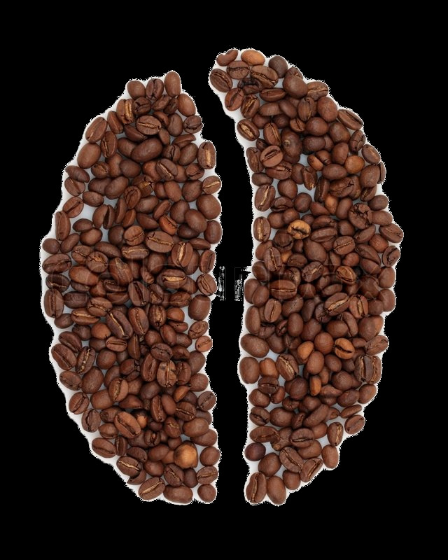

-
-

-
Arábica Lavado
Son grandes granos, de forma elíptica, de coloración verde-azulada y olor a verde. Tostado desarrolla grandemente su volumen y en la taza es un café aromático de excelente sabor. Se produce fundamentalmente en países centroamericanos y esteafricanos.
Arábica no Lavado
Cultivado básicamente en Brasil, su cultivo se inició en 1732 en las entonces colonias portuguesas de Pará, Amazonas y Marañón. En 1760 se introdujeron cafetos procedentes de la colonia portuguesa de Goa, en la India. Son granos ovalados, de coloración verde amarillenta y olor a hierba verde, con sabores muy variados en función de la región de cultivo. Son típicos los Río, Riados y Riozonas por su característico y acusado sabor que recuerda el yodo.
Robusta
(destacan las variedades Conilón, Kouilloi, Niaouli, Uganda...) aportan un 30% a la producción mundial. Especie “descubierta” al observar que era inmune a la plaga de hongos Hemiliea Vastatrix que diezma a los arábicas, de ahí le viene el nombre. Originarios del Zaire, los principales cultivos están en zonas bajas y secas de África, Indochina y Brasil. Son cafés con un mayor contenido de cafeína, del 2 al 4%. Presenta un grano redondo, regular, de color marrón amarillento y con olor a paja seca. El tueste es normal y da lugar a un café fuerte, de gran cuerpo, de color oscuro y de fuerte sabor con un punto amargo que se pega al paladar. Café normalmente tratado en seco –no lavado-, que comporta la posible presencia de tierra en las hendiduras y otros defectos.
Caracolillo
(peaberry, caracoli o pearlcaffe). No es ninguna variedad, pero sí un tipo especial de grano. De hecho es un grano “defectuoso” que no crece normalmente al estar ubicado al final de las ramas y recibir poco aporte de savia. Crece sobre sí mismo, desarrollando un solo grano redondo dentro de la cereza en lugar de los dos medios granos normales. Al estar localizado en la periferia del árbol, recibe la máxima aportación de lluvia y de luz solar. Es un café muy apreciado por su paladar maduro y afrutado.